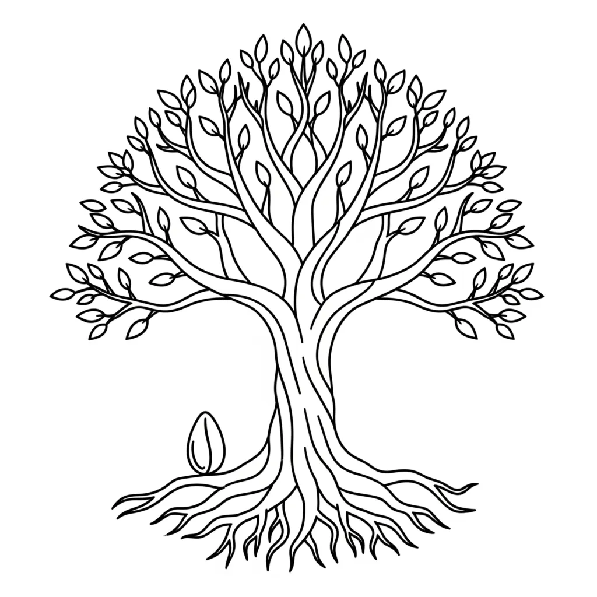

At the centre of the Garden in Genesis stand two trees. Every thread of the Biblical narrative eventually returns to them, because they represent the only two available orientations of consciousness. The entire movement of Scripture, from the Fall to the Exodus, from the pit to the palace, from the stump to the restored kingdom, is the story of YHVH/LORD moving between these two trees. Understanding them according to the mechanics the creation account establishes is understanding the engine that drives the whole Bible.
The Garden as Present Consciousness
Before the trees can be understood, the Garden itself must be correctly identified. According to the structural distinction between Genesis 1 and Genesis 2, Elohim operates in chapter one as the governing plural structure decreeing the mechanics of creation: order from latent potential, every seed reproducing after its kind. In chapter two, YHVH/LORD Elohim enters the account. Present consciousness, YHVH/LORD, is now in active relation with the creation those laws govern. The Garden is not a location. It is the current field of awareness, the interior landscape that YHVH/LORD inhabits at any given moment. The trees grow within that landscape.
And out of the ground the Lord God made every tree to come up which was pleasing to the eye and good for food; and in the middle of the garden, the tree of life and the tree of the knowledge of good and evil. — Genesis 2:9
YHVH/LORD Elohim causes both trees to grow from the ground of that present consciousness. Both are always available within the Garden. The question the narrative poses from this point forward is which tree YHVH/LORD will eat from, meaning which tree will become the source of the identity Elohim is then required to enforce.
The Names of the Trees as Identity Codes
Thread 8 of the key establishes that names in Scripture are not labels but compressed identity codes. They disclose the nature of the state before the narrative unfolds. The names of both trees operate exactly this way.
The Tree of Life: the name encodes the state itself. Life here is not biological existence but the condition of YHVH/LORD fully occupying a chosen Ehyeh/I AM. The name declares that the nature of this state is generative, self-sustaining, and reproductive after its kind. Whatever identity is assumed from this tree, Elohim must enforce as living reality. The name is the verdict before the story begins.
The Tree of the Knowledge of Good and Evil: the name encodes division. Knowledge here is the activity of evaluating, measuring, and comparing what is externally perceived. Good and evil are not moral categories in the key's framework; they are the two poles of external circumstance between which a consciousness caught in this tree perpetually oscillates. The name declares that the nature of this state is judicial reaction to appearances rather than generative assumption of identity. YHVH/LORD occupying this state presents to Elohim not a chosen I AM but a divided report of external conditions. Elohim, as impartial enforcers, must rule on what is actually presented.
And God said, Let the earth put forth grass, plants producing seed, and fruit-trees giving fruit, in which is their seed, after their sort: and it was so. — Genesis 1:11
The reproductive law of Genesis 1 governs both trees equally. Every seed reproduces after its kind. Elohim does not favour one tree over the other. They enforce whatever seed is planted by the identity YHVH/LORD presents.
The Courtroom Mechanics: How Each Tree Operates
The key establishes a precise courtroom structure. YHVH/LORD, present consciousness, stands as the petitioner. Ehyeh/I AM is the identity assumed and presented. Elohim, the Judges and Rulers, are bound by the statutes of creation to enforce the outcome consistent with whatever identity is presented to them. The two trees represent two entirely different kinds of filing in that courtroom.
Eating from the Tree of Life is the act of YHVH/LORD presenting a clear and fully occupied Ehyeh/I AM to Elohim. The petitioner has assumed the desired identity from within, without waiting for external circumstances to confirm it. Elohim receives a coherent filing and must rule in its favour. The statute is unambiguous: the seed reproduces after its kind. The assumed identity, fully occupied, generates the corresponding reality.
Eating from the Tree of Knowledge is the act of YHVH/LORD presenting to Elohim not an assumed I AM but a report on external conditions. The petitioner is evaluating what is good and what is evil in the observable world and filing that evaluation as the dominant identity. Elohim, receiving a filing built on lack, comparison, or division, must enforce accordingly. Thread 7 names this the jurisdictional error: presenting a fragmented or contradictory identity while claiming the desired outcome. The filing is incorrect not because Elohim is hostile but because the law of reproduction is impartial. The seed of division reproduces division.
The Fall as the Original Jurisdictional Error
Genesis 3 records the first movement from the Tree of Life to the Tree of Knowledge, and the mechanics are precise. The serpent does not force the transfer. It redirects attention. The question posed to the woman, "Has God truly said you may not take of the fruit of any tree in the garden?" is not a theological challenge. It is the introduction of external evaluation into a consciousness that had been living from inner assumption. The moment attention shifts from what is assumed to what is permitted, prohibited, or observable, the Tree of Knowledge becomes the operative source.
And the woman saw that the tree was good for food, and that it was pleasing to the eyes, and to be desired to make one wise: and she took of its fruit and gave it to her husband with her, and he took it. — Genesis 3:6
The woman evaluates the tree externally: it is good for food, pleasing to the eye, desirable for the knowledge it confers. Every criterion is outward. YHVH/LORD has shifted from assuming an inner identity to assessing an outer appearance. The filing presented to Elohim is now built on external observation rather than assumed I AM. Elohim enforces accordingly, and the consequences the text records, shame, hiding, expulsion from the Garden, are not punishments imposed from outside. They are the impartial enforcement of the identity that has now been assumed. A consciousness that defines itself by external evaluation will experience exposure, judgment, and separation as its natural condition, because those are the seeds it has planted.
The loss of the Garden is the loss of the interior state in which YHVH/LORD was living from inner identity. The leave and cleave dynamic has been inverted. Rather than leaving the familiar external state and cleaving to the chosen I AM, YHVH/LORD has left the assumed identity and cleaved to external appearances. Elohim, as the enforcer of the one flesh statute, maintains continuity with whatever state is fully occupied. The one flesh that is now maintained is union with the divided, reactive state of the Tree of Knowledge.
Cain and Abel: Two Offerings from Two Trees
The immediate consequence of the Fall in the narrative is Cain and Abel, and the account makes structural sense when both brothers are read as states of consciousness presenting their dominant identity to Elohim as an offering.
And the Lord had respect for Abel and for his offering: But for Cain and for his offering he had no respect. And Cain was angry and his face became sad. — Genesis 4:4-5
Abel's offering is accepted because his assumed identity is coherent. He is presenting from the Tree of Life: an inner state aligned with a chosen end, with no division between the identity assumed and the offering made. Elohim, receiving a clear filing, rules in its favour.
Cain's offering is not accepted because his dominant state is one of external comparison. His attention is already on what Abel is receiving rather than on what he himself is assuming. He is eating from the Tree of Knowledge, evaluating good and evil in the form of his own offering measured against his brother's. The filing he presents to Elohim is therefore built on division and reaction, and Elohim enforces that state.
The instruction that follows is the clearest short-form statement in the whole Bible of how to move from one tree to the other:
If you do well, will you not have honour? and if you do wrong, sin is waiting at the door, desiring to have you, but do you rule over it. — Genesis 4:7
"Do well" means present the correct filing: assume the chosen I AM from the Tree of Life and let Elohim enforce it. Sin crouching at the door is the jurisdictional error waiting to re-enter the moment attention returns to external evaluation. Ruling over it means maintaining the assumed identity, holding the inner state against the pressure of outward appearances.
The Vine, the Branch, and the Fruit
Thread 1 of the key establishes that all botanical imagery in Scripture carries the same mechanics: YHVH/LORD assumes an identity before Elohim enforces its fruit. The vine is one of the most sustained expressions of the Tree of Life principle across the whole narrative. The seed contains the full pattern of the future tree; the branch draws its life entirely from the vine it is joined to; the fruit is the enforced outcome of that union.
When Jesus in the Gospel of John declares "I AM the vine, you are the branches," the statement is a precise description of how the Tree of Life operates within a plurality of consciousness. The assumed I AM, the vine, is the governing identity. The branches are the many internal voices of consciousness, the Elohim structure. When those branches remain joined to the vine, drawing their life from the assumed identity rather than from external evaluation, they bear fruit. When a branch is separated from the vine and begins defining itself by its own external observation, it withers. This is eating from the Tree of Knowledge: the branch has left the assumed I AM and is now governed by what it sees rather than what it is joined to.
I am the vine, you are the branches. He who is in me at all times as I am in him, gives much fruit: because without me you are able to do nothing. — John 15:5
The wine that the vine produces is the covenant of that assumed identity made available to others. Thread 6 maps the full movement from Garden to Kingdom through these images: seed to nation, vine to kingdom, shepherd to king, wine to covenant. Every stage is YHVH/LORD presenting a more fully occupied Ehyeh/I AM to Elohim, with Elohim enforcing the expanded outcome at each stage.
Absalom: The Tree as Trap
In 2 Samuel 18, Absalom is caught by his head in the branches of a great oak and left hanging between heaven and earth while the mule moves on beneath him. The image is the Tree of Knowledge at its most extreme: a consciousness so entirely invested in outward appearance that it is finally arrested by it.
And Absalom came face to face with the servants of David. And Absalom was on his mule, and the mule went under the thick branches of a great tree, and his head was caught in the tree and he was hanging between heaven and earth; and the mule which was under him went on. — 2 Samuel 18:9
The text has prepared this moment throughout Absalom's life by drawing consistent attention to his hair, the most visible emblem of the identity he has constructed for external admiration. Hair as the outgrowth of thought, the most conspicuous expression of inner life made public, is precisely what catches in the tree. YHVH/LORD in this state cannot move because it is suspended between the two conditions the Tree of Knowledge always produces: the heaven of desired approval and the earth of present circumstance. Neither is the assumed I AM of the Tree of Life. The mule, the momentum of life itself, continues without him. Only the consciousness trapped in external identification is left hanging.
The latent seed of inner potential is still present within the tree, but it cannot germinate. Attention is entirely consumed by the snare of appearance.
Jesus on the Tree: The Assumed Identity That Cannot Be Broken
Acts 5:30 describes the crucifixion using the specific image of the tree. The choice of that image over the word cross is not incidental. It places the event directly within the interpretive framework the Garden has established.
The God of our fathers raised up Jesus, whom you put to death, hanging him on a tree. — Acts 5:30
Where Absalom is suspended on a tree because his identity is externally defined and collapses under pressure, the state represented here is the opposite: an I AM so fully and consistently assumed that it remains coherent under the maximum weight of outward contradiction. The crucifixion is not the defeat of the assumed identity. It is the moment of its fullest test. YHVH/LORD, present consciousness in its most extreme circumstance, does not return to the Tree of Knowledge and begin evaluating the external evidence. The I AM remains occupied.
Elohim, receiving that filing uncorrupted, enforces the resurrection. The seed planted by a fully occupied I AM, even under conditions of apparent death, reproduces after its kind. This is the Tree of Life taken to its logical completion within the narrative. The plurality gathered under that one assumed identity, the disciples who followed and ultimately carried the same I AM forward, are the branches of the vine, the fold gathered by the Shepherd, Elohim enforcing the one flesh statute of the assumed identity across a community of consciousness.
Nebuchadnezzar: The Stump and the Root
Daniel 4 presents the full life cycle of a consciousness that builds its entire identity on the Tree of Knowledge, and the account is precise about both the collapse and the mechanism of restoration. The great tree that Nebuchadnezzar sees in his dream is his own assumed identity, but it is an identity constructed entirely from external achievement: height, visibility, the capacity to shelter others, the admiration of all who can see it. Every measurement is outward.
The tree became great and strong, and its top reached to heaven, and the sight of it to the end of all the earth. — Daniel 4:11
The decree to cut it down is not divine punishment in the conventional sense. It is Elohim enforcing the nature of the state that has been occupied. An identity built entirely on external validation cannot survive when external conditions change, because it has no inner root in an assumed I AM. The tree falls because it was never eating from the Tree of Life.
But the stump and the roots are left in the earth. This is the key detail of the account. YHVH/LORD, present consciousness, is never destroyed. The capacity to assume a different identity, to redirect attention from external evaluation to inner assumption, is always present. The stump is the residual awareness that remains after the externally constructed identity has collapsed. The iron and bronze band placed around it holds it in the ground: the laws of consciousness, Elohim's statutes, preserve the capacity for return even when the surface identity is gone.
The restoration comes the moment Nebuchadnezzar lifts his eyes to heaven and redirects attention inward and upward rather than outward and downward:
At the end of the days, I, Nebuchadnezzar, let my eyes be turned to heaven, and my reason came back to me, and I gave praise and honour to the Most High. — Daniel 4:34
The shift in attention is the shift between trees. YHVH/LORD stops eating from the Tree of Knowledge, stops evaluating external conditions as the definition of identity, and presents a different I AM to Elohim. Elohim enforces the restoration immediately. The kingdom is returned not because circumstances changed first but because the assumed identity changed first. The reproductive law of Genesis 1 operates across the full arc of a human life as readily as it operates in the Garden.
The Two Trees and the Ask, Believe, Receive Principle
Thread 3 of the key establishes the Ask, Believe, Receive principle as the operational mechanics of cleaving to a new identity. It maps directly onto the two trees. Asking is YHVH/LORD recognising the desire within consciousness, the recognition that the current Garden state does not yet express the chosen identity. Believing is the act of eating from the Tree of Life: assuming the Ehyeh/I AM as already true, internalising it as a marriage rather than a wish. Receiving is Elohim enforcing the outcome, because the assumed identity, fully occupied, is the seed that must reproduce after its kind.
The Tree of Knowledge interrupts this sequence at the second stage. YHVH/LORD asks, recognises the desire, but instead of assuming the I AM, returns to external evaluation of whether it is yet visible, confirmed, or granted. The filing presented to Elohim is therefore one of absence rather than assumption. Elohim enforces absence. The Tree of Knowledge always produces the fruit of the state it actually encodes: division, reaction, and the perpetual oscillation between hope and disappointment.
The leave and cleave instruction of Genesis 2:24 is the precise antidote. Leave the familiar state of external identification, the habitual pattern of defining I AM by what is observed. Cleave to the chosen identity as a spouse, not as a desire held at arm's length. Elohim maintains continuity with whichever state is fully occupied as one flesh. The one flesh union with the Tree of Life assumed identity is what the whole narrative, from Garden to Kingdom, from Abraham leaving his father's house to Israel leaving Egypt, is demonstrating at every stage.
The Trees Across the Full Narrative
Thread 6 maps the progression from Garden to Kingdom as a single sustained movement of YHVH/LORD presenting increasingly established I AM identities to Elohim for enforcement. The Garden is always the current state of consciousness. The Kingdom is the fully realised identity. Between them, every figure in the narrative is either eating from one tree or the other, and Elohim is enforcing the fruit of whichever is occupied.
Abraham leaves his father's house, the familiar state of consciousness defined by inherited identity, and assumes I AM as father of many nations. Elohim enforces it across generations. Israel leaves Egypt, the state of consciousness defined by external bondage and the evaluation of circumstances, and assumes the identity of a people belonging to the governing structure of creation. Elohim enforces it through the wilderness and into the land. Joseph, in the pit, does not eat from the Tree of Knowledge and define himself by his present external circumstances. He occupies an assumed I AM that Elohim enforces through every stage of reversal until the palace is the enforced reality. His very name encodes it: Joseph means he shall add, and the state of addition is what Elohim reproduces at every point where he fully occupies it.
Every one of these movements is the same operation: YHVH/LORD leaves the Tree of Knowledge, assumes the identity encoded in the Tree of Life, and Elohim enforces the outcome. The Garden is always now. Both trees are always present within it. The question the whole of Scripture is asking, in every narrative, in every name, in every seed and vine and stump and restoration, is which tree is being eaten from in this moment.
About The Author | Genesis 1:11 Series | Tree of Life Series